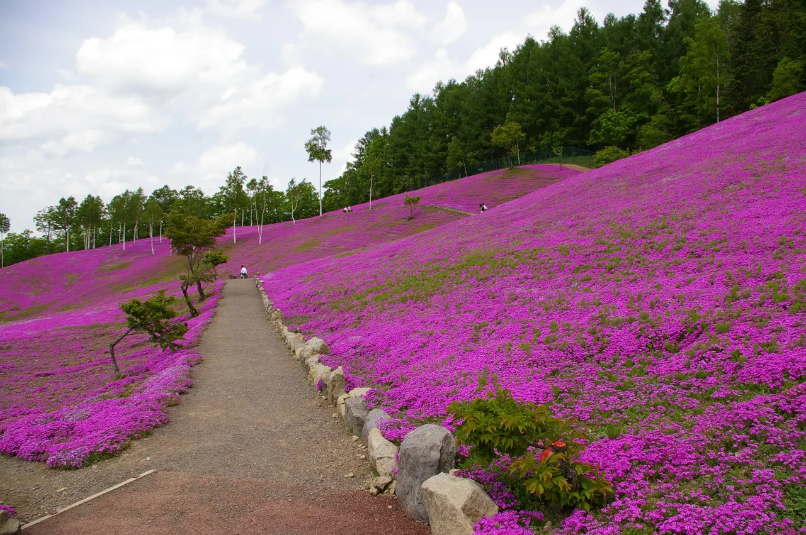
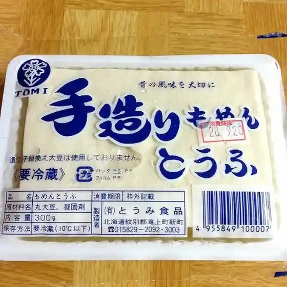
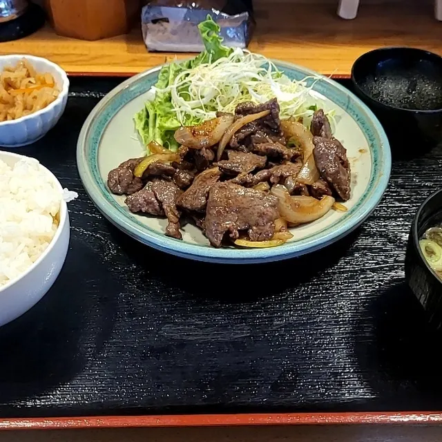
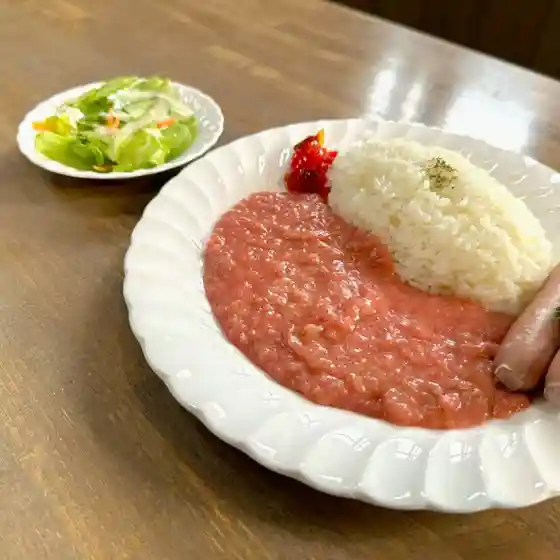
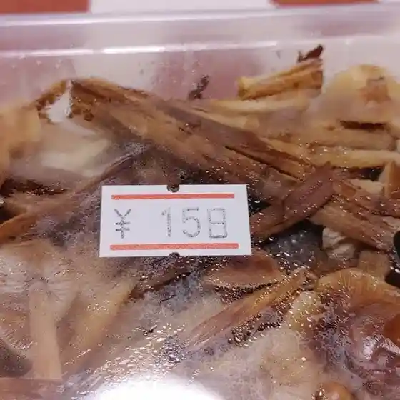
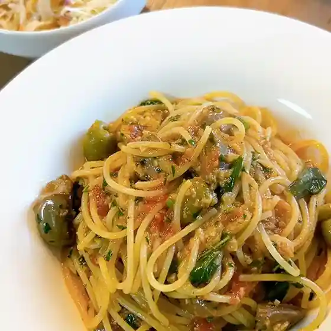
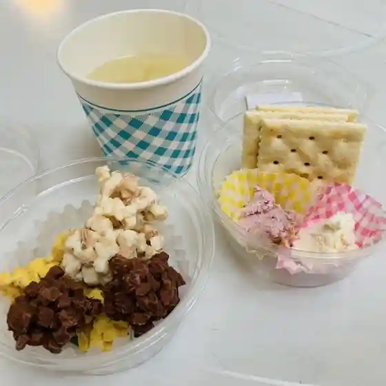

Takinoue
Takinoue · Hokkaido
Takinoue
Highlighted on the Hokkaido map.

Stay
たきのうえホテル渓谷
Takinoue Hoteru Keikoku
Dining
芝ざくらソフトクリーム
Shiba Zakura Sofutokuriimu
とうみ

Toumi
レストランありす

Resutoran Arisu
ハーブガーデン フレグランスハウス

Haabugaaden Fureguransuhausu
スーパーナカガワ

Suupaanakagawa
saVanna

Savanna
赤朝珍

Aka Asa Chin
道の駅 香りの里たきのうえ

Michi No Eki Kaori No Sato Takinoue
産直屋萌芽
Sanchoku Ya Houga
森のレストラン
Mori No Resutoran
秀晃園
Hideaki Sono
セイコーマート 滝上店
Seikoomaato Takigami Mise
栄旅館
Sakae Ryokan
たきのうえホテル渓谷
Takinoue Hoteru Keikoku
海鮮・焼肉バル Nakagawa
Kaisen Yakiniku Baru Nakagawa
リベラ
Ribera
karsui
Karsui
食堂 林檎の木
Shokudou Ringo No Ki